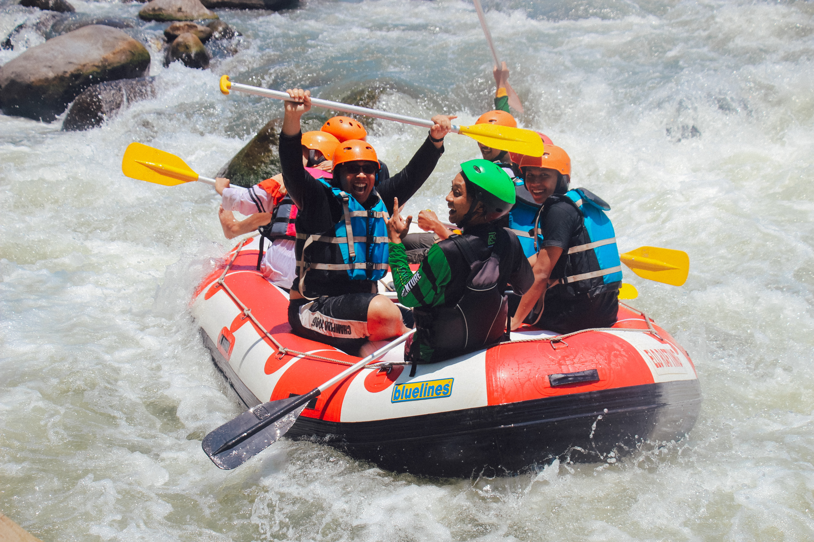
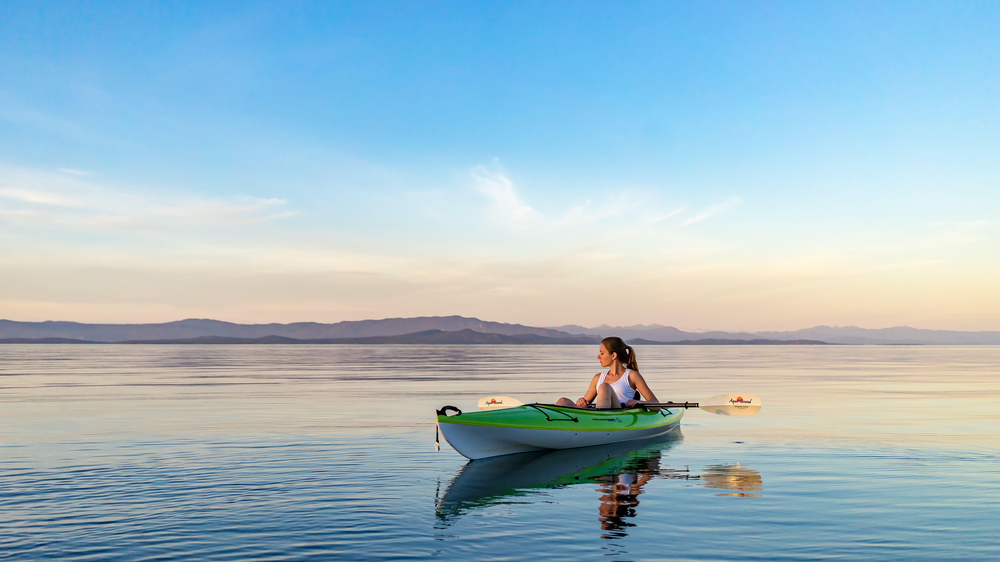

懷赫科島是紐西蘭豪拉基灣(Hauraki Gulf)其中一個獨立小島，面積之大 屬於海灣第二，因為島上有多個酒莊，而成為奧克蘭著名的品酒勝地， 前年獲旅遊聖書《Lonely Planet》評為全球第五個最佳的旅遊熱點，更打 入美國旅遊雜誌《Condé Nast Traveler》「全球30個最佳島嶼」排行榜，位 列第四。

冒險刺激
7天北島冒險旅
北島充滿了令人驚訝的對比：從懷赫科島的品酒聖地，穿越間歇泉的地熱仙境，進行前往中土鄉村的鄉村之旅，並在螢火蟲點燃的山洞裡進行地下探險，欣賞茂密的熱帶雨林，甚至火山沙漠-您都會對這一切感到前所未有的經歷。
這次由小組指導的紐西蘭北島冒險之旅將參觀懷赫科島，羅托魯瓦，陶波和惠靈頓，並可以沿途參觀霍比屯，懷托摩螢火蟲洞和末日火山。
當然與我們所有的行程一樣，我們也會做一些“必做”的活動，包括毛利文化之夜和用地下烤箱烹製的傳統毛利人Hangi晚餐。
行程焦點
螢火蟲洞
名列世界第九大奇蹟的螢火蟲夢幻奇景星空

末日火山泛舟
紐西蘭北島最受歡迎的泛舟體驗地點之一
陶波湖高空跳傘
從12,000英尺或15,000英尺高空降落，感受飛翔的快感
行程路線
第一天
奧克蘭至懷赫科島
第二天
羅托魯瓦 - 森林滑索和火山泥溫泉
第二天前往羅托魯瓦進行紐西蘭唯一的樹冠原生森林滑索之旅。深入本土森林度過3個小時的荒野探險，將成為你一生難忘的回憶。 晚上則會前往紐西蘭最天然神奇的地下火山泥溫泉裡感受一下神奇的大自然造就的溫泉. 遊客可以在這裡感受新奇健康的含有硫磺的火山泥療養, 獨特的溫泉環境,定能讓您大開眼界,永生難忘.
第三天
 螢火蟲洞
螢火蟲洞
我們將從羅托魯瓦前往至螢火蟲洞，穿戴潛水防寒衣、探照燈、搭上橡膠輪胎，在黑 得手不見五指迂迴洞內激流探險，溪流時及時緩，頭頂就是名列世界第九 大奇蹟的螢火蟲夢幻奇景星空!
第四天
 哈比村 - 魔戒拍攝場景
哈比村 - 魔戒拍攝場景
第四天會帶你前往所有人都夢寐以求的魔戒拍攝場景「哈比村」，夏爾的山 坡上一共有44個哈比洞，還有美麗的湖畔磨坊與浪漫的拱橋，悠閒的拍照 探險，再到「綠龍酒館」喝一杯免費啤酒，盡情走逛完整還原《魔戒》電影場 景，感受哈比人的日常生活。

顯示所有路線
行程包括
六晚高級住宿
六天早、午、晚餐
懷赫科島酒莊
羅托魯瓦-森林滑索和火山泥溫泉
螢火蟲洞-極限探險
魔界奇景-哈比村
紐西蘭特色美食
末日火山-極限泛舟
陶波湖-跳傘及各項水上活動
威靈頓-山頂纜車
客製化活動加購選項
覺得行程玩得不過癮嗎? 以下活動是能在確認付款前添加購買至此行程的其他冒險活動
-
 陶波胡-獨木舟 $199 -

羅托魯瓦-悠波球 $125 -

陶波胡-噴氣艇 $139
開放及預約日期
所有日期
30天以內
90天以內
90天以後